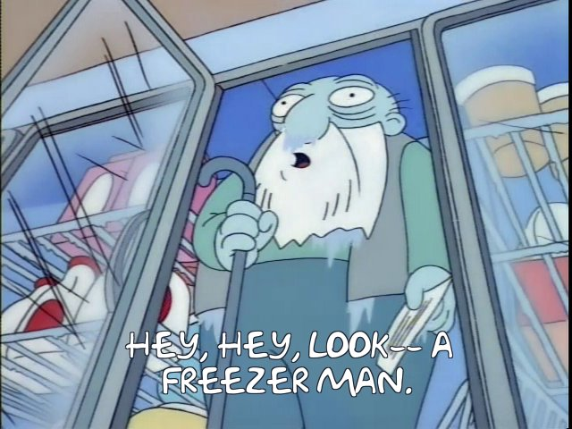

I’m not much of writer of the fiction kind, but if I were, I’d take a crack at this premise:
In the future, humans have the ability and right to put their children into flawless suspended animation.
They can do this until their children accrete eighteen total years of “animated” age.
So, after a tiring day of childcare, parents freeze their kid and take the next day easy. They can then spend the next couple of days after that working on projects. And maybe then they can bear down on their jobs, if that’s what they like to do.
All that time, they can chew over a puzzling day with the kid and come to a considered course of action. When they’re ready, they restore the kid and spend a day or with them, 100% engaged and untired!
As a result, some parents reach the age of 90 by the time their child is 18 in animated years. Parents more commonly die before their kids become adults. Groups of parents form tribes around whatever limit on suspension they’ve set for themselves. Economic and power disparities risie from the uneven distribution of the privilege of suspension. Paranoia grows about hidden physiological effects of suspension when, in truth, it actually is perfect.
Then, there are the effects of adults suspending themselves simply because they don’t like their lives and hope that a few rolls of the dice will change things for the better.

(Image courtesy of Frinkiac.)
Writers, feel free to have at it!